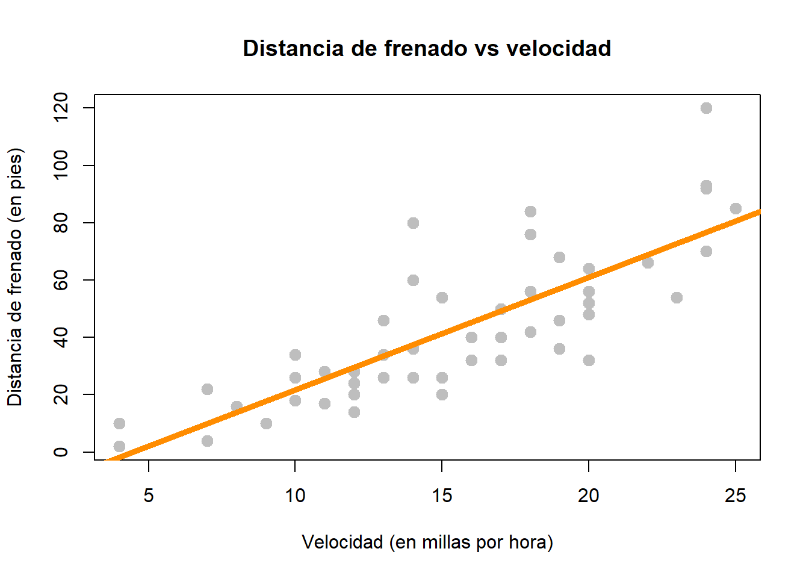
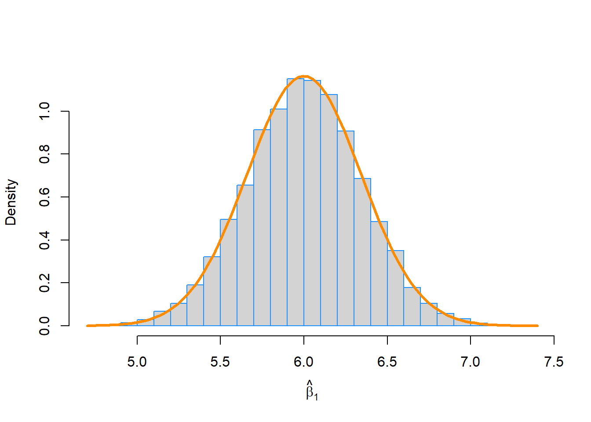
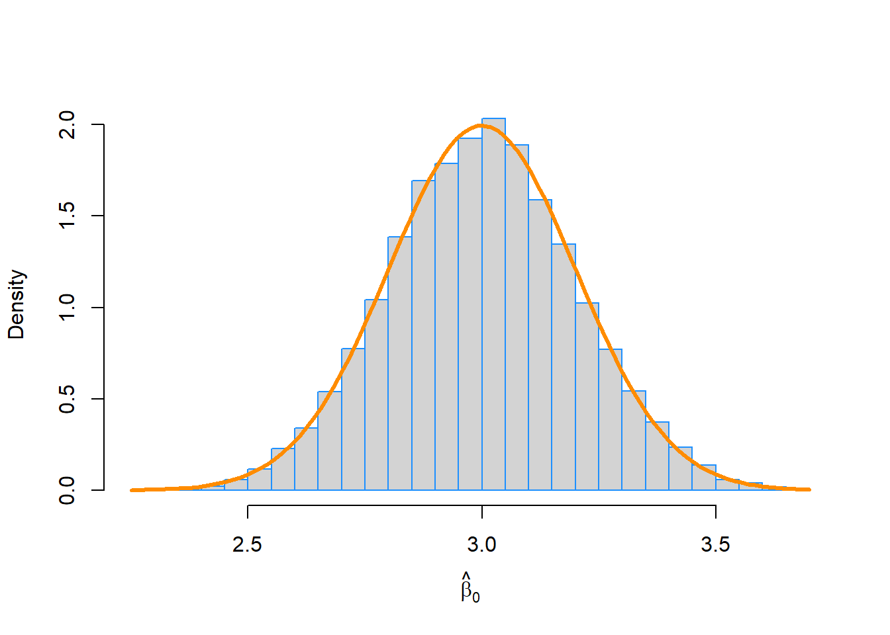
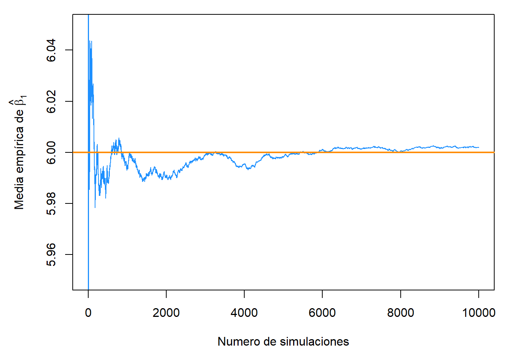
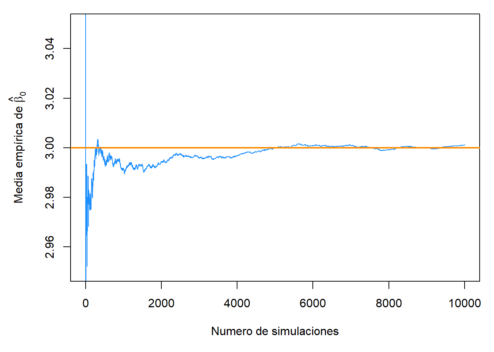
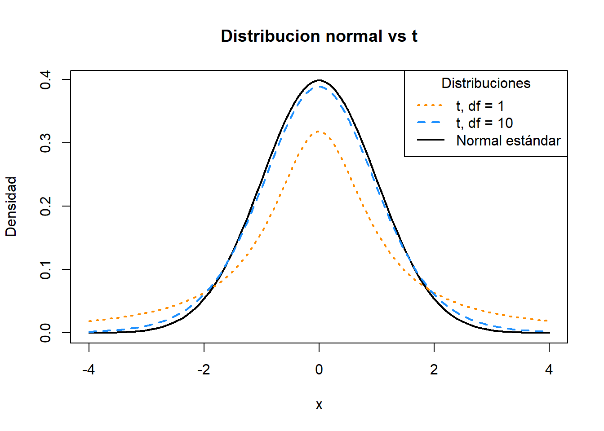
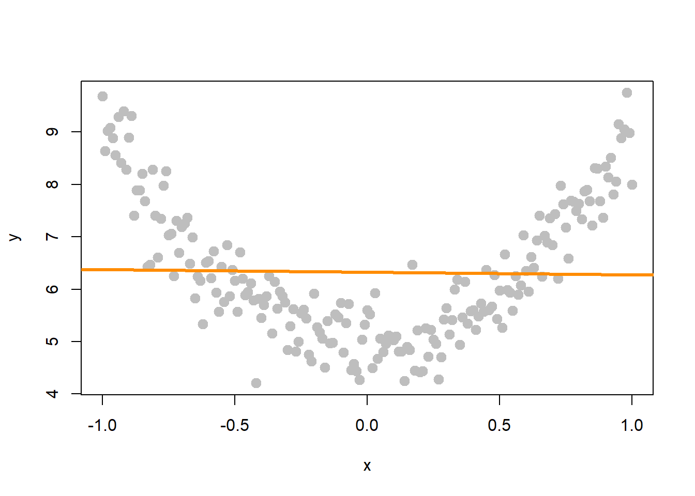
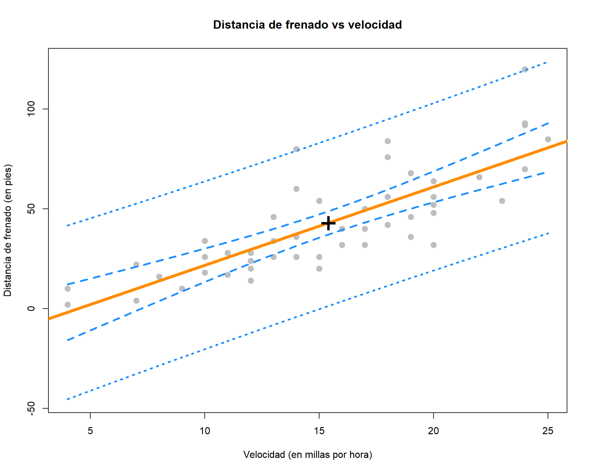

Capítulo 8 Inferencia para regresión lineal simple
“Hay tres tipos de mentiras: mentiras, malditas mentiras y estadísticas.”
— Benjamin Disraeli
Después de leer este capítulo, podrá:
- Comprender las distribuciones de las estimaciones de regresión.
- Crear estimaciones de intervalo para parámetros de regresión, respuesta media y predicciones.
- Probar la significancia de la regresión.
En el capítulo anterior definimos el modelo de regresión lineal simple,
\[ Y_i = \beta_0 + \beta_1 x_i + \epsilon_i \]
donde \(\epsilon_i \sim N(0, \sigma^2)\). luego usamos observaciones \((x_i, y_i)\), con \(i = 1, 2, \ldots n\), para encontrar valores de \(\beta_0\) y \(\beta_1\) que minimizan
\[ f(\beta_0, \beta_1) = \sum_{i = 1}^{n}(y_i - (\beta_0 + \beta_1 x_i))^2. \]
Llamamos a estos valores \(\hat{\beta}_0\) y \(\hat{\beta}_1\), que encontramos
\[ \begin{aligned} \hat{\beta}_1 &= \frac{S_{xy}}{S_{xx}} = \frac{\sum_{i = 1}^{n}(x_i - \bar{x})(y_i - \bar{y})}{\sum_{i = 1}^{n}(x_i - \bar{x})^2}\\ \hat{\beta}_0 &= \bar{y} - \hat{\beta}_1 \bar{x}. \end{aligned} \]
También estimamos \(\sigma^2\) usando \(s_e^2\). En otras palabras, encontramos que \(s_e\) es una estimación de \(\sigma\), donde;
\[ s_e = \text{RSE} = \sqrt{\frac{1}{n - 2}\sum_{i = 1}^n e_i^2} \]
que también llamamos \(\text{RSE}\), para “Error estándar residual”.
Cuando se aplica a los datos “cars”, obtenemos los siguientes resultados:
stop_dist_model = lm(dist ~ speed, data = cars)
summary(stop_dist_model)##
## Call:
## lm(formula = dist ~ speed, data = cars)
##
## Residuals:
## Min 1Q Median 3Q Max
## -29.069 -9.525 -2.272 9.215 43.201
##
## Coefficients:
## Estimate Std. Error t value Pr(>|t|)
## (Intercept) -17.5791 6.7584 -2.601 0.0123 *
## speed 3.9324 0.4155 9.464 1.49e-12 ***
## ---
## Signif. codes: 0 '***' 0.001 '**' 0.01 '*' 0.05 '.' 0.1 ' ' 1
##
## Residual standard error: 15.38 on 48 degrees of freedom
## Multiple R-squared: 0.6511, Adjusted R-squared: 0.6438
## F-statistic: 89.57 on 1 and 48 DF, p-value: 1.49e-12El último capítulo, solo discutimos sobre los valores de Estimación, Error estándar residual, y R cuadrado múltiple. En este capítulo, discutiremos toda la información acerca de los Coeficientes así como también de el Estadístico F.
plot(dist ~ speed, data = cars,
xlab = "Velocidad (en millas por hora)",
ylab = "Distancia de frenado (en pies)",
main = "Distancia de frenado vs velocidad",
pch = 20,
cex = 2,
col = "grey")
abline(stop_dist_model, lwd = 5, col = "darkorange")
Para comenzar, notaremos que hay otra expresión equivalente para \(S_{xy}\) que no vimos en el último capítulo,
\[ S_{xy}= \sum_{i = 1}^{n}(x_i - \bar{x})(y_i - \bar{y}) = \sum_{i = 1}^{n}(x_i - \bar{x}) y_i. \]
Ésta puede ser una equivalencia sorprendente. (Tal vez intente probarlo). Sin embargo, será útil para ilustrar conceptos en este capítulo.
Tenga en cuenta que \(\hat{\beta}_1\) es una estadística muestral cuando se calcula con los datos observados como está escrito anteriormente, al igual que \(\hat{\beta}_0\).
Sin embargo, en este capítulo a menudo será conveniente utilizar tanto \(\hat{\beta}_1\) como \(\hat{\beta}_0\) como variables aleatorias, es decir, aún no hemos observado los valores por cada \(Y_i\). Cuando este sea el caso, usaremos una notación ligeramente diferente, sustituyendo en mayúsculas \(Y_i\) por minúsculas \(y_i\).
\[ \begin{aligned} \hat{\beta}_1 &= \frac{\sum_{i = 1}^{n}(x_i - \bar{x}) Y_i}{\sum_{i = 1}^{n}(x_i - \bar{x})^2} \\ \hat{\beta}_0 &= \bar{Y} - \hat{\beta}_1 \bar{x} \end{aligned} \]
En el último capítulo argumentamos que estas estimaciones de parámetros de modelo desconocidos \(\beta_0\) y \(\beta_1\) eran buenas porque las obtuvimos minimizando los errores. Ahora discutiremos el teorema de Gauss-Markov que lleva esta idea más allá, mostrando que estas estimaciones son en realidad las “mejores” estimaciones, desde cierto punto de vista.
8.1 Teorema de Gauss-Markov
El teorema de Gauss-Markov nos dice que al estimar los parámetros del modelo de regresión lineal simple \(\beta_0\) y \(\beta_1\), los \(\hat{\beta}_0\) and \(\hat{\beta}_1\) que se obtienen son las mejores estimaciones lineales insesgadas, o BLUE para abreviar. (Las condiciones reales del teorema de Gauss-Markov son más flexibles que las del modelo SLR).
Ahora discutiremos lineal, insesgado y mejor en lo que se refiere a estas estimaciones.
Lineal
Recuerde, en la definición de SLR que los valores \(x_i\) se consideran cantidades fijas y conocidas. Entonces, una estimación lineal es aquella que se puede escribir como una combinación lineal de \(Y_i\). En el caso de \(\hat{\beta}_1\) vemos
\[ \hat{\beta}_1 = \frac{\sum_{i = 1}^{n}(x_i - \bar{x}) Y_i}{\sum_{i = 1}^{n}(x_i - \bar{x})^2} = \sum_{i = 1}^n k_i Y_i = k_1 Y_1 + k_2 Y_2 + \cdots k_n Y_n \]
donde \(k_i = \displaystyle\frac{(x_i - \bar{x})}{\sum_{i = 1}^{n}(x_i - \bar{x})^2}\).
De manera similar, podríamos mostrar que $_0 $ se puede escribir como una combinación lineal de \(Y_i\). Luego, tanto \(\hat{\beta}_0\) como \(\hat{\beta}_1\) son estimadores lineales.
Insesgado
Ahora que sabemos que nuestras estimaciones son lineales, ¿qué tan buenas son estas estimaciones? Una medida de la “bondad” de una estimación es su sesgo. Específicamente, preferimos estimaciones que sean insesgadas, lo que significa que su valor esperado es el parámetro que se estima.
En el caso de las estimaciones de regresión, tenemos, \[ \begin{aligned} \text{E}[\hat{\beta}_0] &= \beta_0 \\ \text{E}[\hat{\beta}_1] &= \beta_1. \end{aligned} \]
Esto nos dice que, cuando se cumplen las condiciones del modelo SLR, en promedio nuestras estimaciones serán correctas. Sin embargo, como vimos en el último capítulo al simular desde el modelo SLR, eso no significa que cada estimación individual sea correcta. Solo que, si repitiéramos el proceso un número infinito de veces, en promedio la estimación sería correcta.
Mejor
Ahora bien, si nos limitamos a estimaciones tanto lineales como insesgadas, ¿cómo definimos la mejor estimación? La estimación con la varianza mínima.
En primer lugar, tenga en cuenta que es muy fácil crear una estimación de \(\beta_1\) que tenga una varianza muy baja, pero que no sea imparcial. Por ejemplo, defina:
\[ \hat{\theta}_{BAD} = 5. \]
Entonces, dado que \(\hat{\theta}_{BAD}\) es un valor constante,
\[ \text{Var}[\hat{\theta}_{BAD}] = 0. \]
Sin embargo, desde,
\[ \text{E}[\hat{\theta}_{BAD}] = 5 \]
decimos que \(\hat{\theta}_{BAD}\) es un estimador sesgado a menos que \(\beta_1 = 5\), lo cual no sabríamos de antemano. Por esta razón, es una mala estimación (a menos que por casualidad \(\beta_1 = 5\)) aunque tenga la menor variación posible. Esta es parte de la razón por la que nos limitamos a estimaciones insesgadas. ¿De qué sirve una estimación, si estima la cantidad incorrecta?
Entonces, ahora, la pregunta natural es, ¿cuáles son las varianzas de \(\hat{\beta}_0\) y \(\hat{\beta}_1\)? Estas son,
\[ \begin{aligned} \text{Var}[\hat{\beta}_0] &= \sigma^2 \left(\frac{1}{n} + \frac{\bar{x}^2}{S_{xx}}\right) \\ \text{Var}[\hat{\beta}_1] &= \frac{\sigma^2}{S_{xx}}. \end{aligned} \]
cuantifican la variabilidad de las estimaciones debido a la aleatoridad durante el muestreo. ¿Son estas “las mejores”? ¿Son estas variaciones pequeñas tanto como es posible obtenerlas? Solo tendrá que confiar en nuestra palabra de que lo son porque demostrar que esto es cierto está más allá del alcance de este curso.
8.2 Distribuciones muestrales
Ahora que hemos “redefinido” las estimaciones para \(\hat{\beta}_0\) y \(\hat{\beta}_1\) como variables aleatorias, podemos discutir su distribución muestral, que es la distribución cuando una estadística se considera una variable aleatoria..
Dado que tanto \(\hat{\beta}_0\) como \(\hat{\beta}_1\) son una combinación lineal de \(Y_i\) y cada \(Y_i\) se distribuye normalmente, entonces ambos \(\hat{\beta}_0\) y \(\hat{\beta}_1\) también siguen una distribución normal.
Luego, juntando todo lo anterior, llegamos a las distribuciones de \(\hat{\beta}_0\) y \(\hat{\beta}_1\).
Para \(\hat{\beta}_1\) decimos,
\[ \hat{\beta}_1 = \frac{S_{xy}}{S_{xx}} = \frac{\sum_{i = 1}^{n}(x_i - \bar{x}) Y_i}{\sum_{i = 1}^{n}(x_i - \bar{x})^2} \sim N\left( \beta_1, \ \frac{\sigma^2}{\sum_{i = 1}^{n}(x_i - \bar{x})^2} \right). \]
O más resumido,
\[ \hat{\beta}_1 \sim N\left( \beta_1, \frac{\sigma^2}{S_{xx}} \right). \]
Y para \(\hat{\beta}_0\),
\[ \hat{\beta}_0 = \bar{Y} - \hat{\beta}_1 \bar{x} \sim N\left( \beta_0, \ \frac{\sigma^2 \sum_{i = 1}^{n}x_i^2}{n \sum_{i = 1}^{n}(x_i - \bar{x})^2} \right). \]
O más resumido,
\[ \hat{\beta}_0 \sim N\left( \beta_0, \sigma^2 \left(\frac{1}{n} + \frac{\bar{x}^2}{S_{xx}}\right) \right) \]
En este punto nos hemos olvidado de probar algunos de estos resultados. En lugar de trabajar con las tediosas demostraciones de estas distribuciones muestrales, justificaremos estos resultados mediante la simulación.
Una nota para los lectores actuales: estas demostraciones y pruebas se pueden agregar a un apéndice en un momento posterior. También puede encontrar estos resultados en casi cualquier libro de texto de regresión lineal estándar.
8.2.1 Simular distribuciones muestrales
Para verificar los resultados anteriores, simularemos muestras de tamaño \(n=100\) del modelo
\[ Y_i = \beta_0 + \beta_1 x_i + \epsilon_i \]
donde \(\epsilon_i \sim N(0, \sigma^2).\) En este caso, se sabe que los parámetros son:
- \(\beta_0 = 3\)
- \(\beta_1 = 6\)
- \(\sigma^2 = 4\)
Entonces, basándonos en lo anterior, deberíamos encontrar que
\[ \hat{\beta}_1 \sim N\left( \beta_1, \frac{\sigma^2}{S_{xx}} \right) \]
y
\[ \hat{\beta}_0 \sim N\left( \beta_0, \sigma^2 \left(\frac{1}{n} + \frac{\bar{x}^2}{S_{xx}}\right) \right). \]
Primero, debemos decidir con anticipación cuáles serán nuestros valores de \(x\) para esta simulación, ya que los valores de \(x\) en SLR también se consideran cantidades conocidas. La elección de valores \(x\) es arbitraria. Aquí también establecemos una semilla para la aleatorización y calculamos \(S_{xx}\) que necesitaremos en el futuro.
set.seed(42)
sample_size = 100 # esto es n
x = seq(-1, 1, length = sample_size)
Sxx = sum((x - mean(x)) ^ 2)También arreglamos los valores de nuestros parámetros.
beta_0 = 3
beta_1 = 6
sigma = 2Con esta información, sabemos que las distribuciones muestrales deben ser:
(var_beta_1_hat = sigma ^ 2 / Sxx)## [1] 0.1176238(var_beta_0_hat = sigma ^ 2 * (1 / sample_size + mean(x) ^ 2 / Sxx))## [1] 0.04\[ \hat{\beta}_1 \sim N( 6, 0.1176238) \]
y
\[ \hat{\beta}_0 \sim N( 3, 0.04). \]
Es decir,
\[ \begin{aligned} \text{E}[\hat{\beta}_1] &= 6 \\ \text{Var}[\hat{\beta}_1] &= 0.1176238 \end{aligned} \]
y
\[ \begin{aligned} \text{E}[\hat{\beta}_0] &= 3 \\ \text{Var}[\hat{\beta}_0] &= 0.04. \end{aligned} \]
Ahora simulamos datos de este modelo 10,000 veces. Tenga en cuenta que esta puede no ser la mejor forma de realizar la simulación en R. Realizamos la simulación de esta manera en un intento de claridad. Por ejemplo, podríamos haber usado la función sim_slr() del capítulo anterior. Ahora, simplemente almacenamos variables en el entorno global en lugar de crear un marco de datos para cada nuevo conjunto de datos simulado.
num_samples = 10000
beta_0_hats = rep(0, num_samples)
beta_1_hats = rep(0, num_samples)
for (i in 1:num_samples) {
eps = rnorm(sample_size, mean = 0, sd = sigma)
y = beta_0 + beta_1 * x + eps
sim_model = lm(y ~ x)
beta_0_hats[i] = coef(sim_model)[1]
beta_1_hats[i] = coef(sim_model)[2]
}Cada vez que simulamos los datos, obtuvimos valores de los coeficientes estimados. Las variables beta_0_hats y beta_1_hats ahora almacenan 10,000 valores simulados de \(\hat{\beta}_0\) y \(\hat{\beta}_1\) respectivamente.
Primero verificamos la distribución de \(\hat{\beta}_1\).
mean(beta_1_hats) # media empírica## [1] 6.001998beta_1 # media verdadera ## [1] 6var(beta_1_hats) # varianza empírica## [1] 0.11899var_beta_1_hat # varianza verdadera ## [1] 0.1176238Vemos que las medias y varianzas empíricas y verdaderas son muy similares. También verificamos que la distribución empírica es normal. Para hacerlo, trazamos un histograma de beta_1_hats y agregamos la curva para la verdadera distribución de $_1 $. Usamos prob = TRUE para poner el histograma en la misma escala que la curva normal.
# tenga en cuenta que es necesario utilizar prob = TRUE
hist(beta_1_hats, prob = TRUE, breaks = 20,
xlab = expression(hat(beta)[1]), main = "", border = "dodgerblue")
curve(dnorm(x, mean = beta_1, sd = sqrt(var_beta_1_hat)),
col = "darkorange", add = TRUE, lwd = 3)
Luego repetimos el proceso para \(\hat{\beta}_0\).
mean(beta_0_hats) # media empírica## [1] 3.001147beta_0 # media verdadera ## [1] 3var(beta_0_hats) # varianza empírica## [1] 0.04017924var_beta_0_hat # varianza verdadera ## [1] 0.04hist(beta_0_hats, prob = TRUE, breaks = 25,
xlab = expression(hat(beta)[0]), main = "", border = "dodgerblue")
curve(dnorm(x, mean = beta_0, sd = sqrt(var_beta_0_hat)),
col = "darkorange", add = TRUE, lwd = 3)
En este estudio de simulación, solo hemos simulado un número finito de muestras. Para verificar verdaderamente los resultados de la distribución, necesitaríamos observar un número infinito de muestras. Sin embargo, la siguiente gráfica debería dejar en claro que si continuamos simulando, los resultados empíricos se acercarían cada vez más a lo que deberíamos esperar.
par(mar = c(5, 5, 1, 1))
plot(cumsum(beta_1_hats) / (1:length(beta_1_hats)), type = "l", ylim = c(5.95, 6.05),
xlab = "Numero de simulaciones",
ylab = expression("Media empírica de " ~ hat(beta)[1]),
col = "dodgerblue")
abline(h = 6, col = "darkorange", lwd = 2)
par(mar = c(5, 5, 1, 1))
plot(cumsum(beta_0_hats) / (1:length(beta_0_hats)), type = "l", ylim = c(2.95, 3.05),
xlab = "Numero de simulaciones",
ylab = expression("Media empírica de " ~ hat(beta)[0]),
col = "dodgerblue")
abline(h = 3, col = "darkorange", lwd = 2)
8.3 Errores estándar
Así que ahora creemos en los dos resultados de las distribuciones
\[ \begin{aligned} \hat{\beta}_0 &\sim N\left( \beta_0, \sigma^2 \left(\frac{1}{n} + \frac{\bar{x}^2}{S_{xx}}\right) \right) \\ \hat{\beta}_1 &\sim N\left( \beta_1, \frac{\sigma^2}{S_{xx}} \right). \end{aligned} \]
Luego, al estandarizar estos resultados, encontramos que
\[ \frac{\hat{\beta}_0 - \beta_0}{\text{SD}[\hat{\beta}_0]} \sim N(0, 1) \]
y
\[ \frac{\hat{\beta}_1 - \beta_1}{\text{SD}[\hat{\beta}_1]} \sim N(0, 1) \]
donde
\[ \text{SD}[\hat{\beta}_0] = \sigma\sqrt{\frac{1}{n} + \frac{\bar{x}^2}{S_{xx}}} \]
y
\[ \text{SD}[\hat{\beta}_1] = \frac{\sigma}{\sqrt{S_{xx}}}. \]
Como no conocemos \(\sigma\) en la práctica, tendremos que estimarlo usando \(s_e\), que enlazamos a nuestra expresión existente para las desviaciones estándar de nuestras estimaciones.
Estas dos nuevas expresiones se denominan errores estándar que son las desviaciones estándar estimadas de las distribuciones muestrales.
\[ \text{SE}[\hat{\beta}_0] = s_e\sqrt{\frac{1}{n} + \frac{\bar{x}^2}{S_{xx}}} \]
\[ \text{SE}[\hat{\beta}_1] = \frac{s_e}{\sqrt{S_{xx}}} \]
Ahora bien, si dividimos por el error estándar, en lugar de la desviación estándar, obtenemos los siguientes resultados que nos permitirán hacer intervalos de confianza y realizar pruebas de hipótesis.
\[ \frac{\hat{\beta}_0 - \beta_0}{\text{SE}[\hat{\beta}_0]} \sim t_{n-2} \]
\[ \frac{\hat{\beta}_1 - \beta_1}{\text{SE}[\hat{\beta}_1]} \sim t_{n-2} \]
Para ver esto, primero tenga en cuenta que,
\[ \frac{\text{RSS}}{\sigma^2} = \frac{(n-2)s_e^2}{\sigma^2} \sim \chi_{n-2}^2. \]
Recuerde también que una variable aleatoria \(T\) esta definida como,
\[ T = \frac{Z}{\sqrt{\frac{\chi_{d}^2}{d}}} \]
sigue una distribución \(t\) con \(d\) grados de libertad, donde \(\chi_{d}^2\) es una variable aleatoria \(\chi^2\) con \(d\) grados de libertad.
escribimos,
\[ T \sim t_d \]
es decir que la variable aleatoria \(T\) sigue una distribución \(t\) con \(d\) grados de libertad.
Luego usamos el truco clásico de “multiplicar por 1” y algunos reordenamientos para llegar a
\[ \begin{aligned} \frac{\hat{\beta}_1 - \beta_1}{\text{SE}[\hat{\beta}_1]} &= \frac{\hat{\beta}_1 - \beta_1}{s_e / \sqrt{S_{xx}}} \\ &= \frac{\hat{\beta}_1 - \beta_1}{s_e / \sqrt{S_{xx}}} \cdot \frac{\sigma / \sqrt{S_{xx}}}{\sigma / \sqrt{S_{xx}}} \\ &= \frac{\hat{\beta}_1 - \beta_1}{\sigma / \sqrt{S_{xx}}} \cdot \frac{\sigma / \sqrt{S_{xx}}}{s_e / \sqrt{S_{xx}}} \\ &= \frac{\hat{\beta}_1 - \beta_1}{\sigma / \sqrt{S_{xx}}} \bigg/ \sqrt{\frac{s_e^2}{\sigma^2}} \\ &= \frac{\hat{\beta}_1 - \beta_1}{\text{SD}[\hat{\beta}_1]} \bigg/ \sqrt{\frac{\frac{(n - 2)s_e^2}{\sigma^2}}{n - 2}} \sim \frac{Z}{\sqrt{\frac{\chi_{n-2}^2}{n-2}}} \sim t_{n-2} \end{aligned} \]
donde \(Z \sim N(0,1)\).
Recuerde que una distribución \(t\) es similar a una normal estándar, pero con colas más pesadas. A medida que aumentan los grados de libertad, la distribución \(t\) se parece cada vez más a una normal estándar. A continuación, trazamos una distribución normal estándar, así como dos ejemplos de una distribución \(t\) con diferentes grados de libertad. Observe cómo la distribución \(t\) con los mayores grados de libertad es más similar a la curva normal estándar.
# definir cuadrícula de valores x
x = seq(-4, 4, length = 100)
# graficar curva para normal estándar
plot(x, dnorm(x), type = "l", lty = 1, lwd = 2,
xlab = "x", ylab = "Densidad", main = "Distribucion normal vs t")
# agregar curvas para distribuciones t
lines(x, dt(x, df = 1), lty = 3, lwd = 2, col = "darkorange")
lines(x, dt(x, df = 10), lty = 2, lwd = 2, col = "dodgerblue")
# agregar leyenda
legend("topright", title = "Distribuciones",
legend = c("t, df = 1", "t, df = 10", "Normal estándar"),
lwd = 2, lty = c(3, 2, 1), col = c("darkorange", "dodgerblue", "black"))
8.4 Intervalos de confianza para pendiente e Intercepto
Recuerde que los intervalos de confianza para los promedios a menudo adoptan la forma:
\[ \text{EST} \pm \text{CRIT} \cdot \text{SE} \]
o
\[ \text{EST} \pm \text{MARGIN} \]
donde \(\text{EST}\) es una estimación del parámetro de interés, \(\text{SE}\) es el error estándar de la estimación y \(\text{MARGIN} = \text{CRIT} \cdot \text{SE}\).
Luego, para \(\beta_0\) y \(\beta_1\) podemos crear intervalos de confianza usando
\[ \hat{\beta}_0 \pm t_{\alpha/2, n - 2} \cdot \text{SE}[\hat{\beta}_0] \quad \quad \quad \hat{\beta}_0 \pm t_{\alpha/2, n - 2} \cdot s_e\sqrt{\frac{1}{n}+\frac{\bar{x}^2}{S_{xx}}} \]
y
\[ \hat{\beta}_1 \pm t_{\alpha/2, n - 2} \cdot \text{SE}[\hat{\beta}_1] \quad \quad \quad \hat{\beta}_1 \pm t_{\alpha/2, n - 2} \cdot \frac{s_e}{\sqrt{S_{xx}}} \]
donde \(t_{\alpha/2, n - 2}\) es el valor crítico tal que \(P(t_{n-2} > t_{\alpha/2, n - 2}) = \alpha/2\).
8.5 Pruebas de hipótesis
“Podemos hablar de esta hipótesis como la ‘hipótesis nula’, y debe tenerse en cuenta que la hipótesis nula nunca se prueba ni se establece, pero posiblemente sea refutada, en el curso de la experimentación”
— Ronald Aylmer Fisher
Recuerde que una estadística de prueba (\(\text{TS}\)) para las medias de prueba a menudo toma la forma:
\[ \text{TS} = \frac{\text{EST} - \text{HYP}}{\text{SE}} \]
donde \(\text{EST}\) es una estimación del parámetro de interés, \(\text{HYP}\) es un valor hipotético del parámetro y \(\text{SE}\) es el error estándar de la estimación.
Entonces, para probar
\[ H_0: \beta_0 = \beta_{00} \quad \text{vs} \quad H_1: \beta_0 \neq \beta_{00} \]
usamos el estadístico de prueba
\[ t = \frac{\hat{\beta}_0 - \beta_{00}}{\text{SE}[\hat{\beta}_0]} = \frac{\hat{\beta}_0-\beta_{00}}{s_e\sqrt{\frac{1}{n} + \frac{\bar{x}^2}{S_{xx}}}} \]
que, bajo la hipótesis nula, sigue una distribución \(t\) con \(n-2\) grados de libertad. Usamos $_{00} $ para denotar el valor hipotético de \(\beta_0\).
Del mismo modo, para probar
\[ H_0: \beta_1 = \beta_{10} \quad \text{vs} \quad H_1: \beta_1 \neq \beta_{10} \]
usamos el estadístico de prueba
\[ t = \frac{\hat{\beta}_1-\beta_{10}}{\text{SE}[\hat{\beta}_1]} = \frac{\hat{\beta}_1-\beta_{10}}{s_e / \sqrt{S_{xx}}} \]
que de nuevo, bajo la hipótesis nula, sigue una distribución \(t\) con \(n-2\) grados de libertad. Ahora usamos \(\beta_{10}\) para denotar el valor hipotético de \(\beta_1\).
8.6 Ejemplo cars
Ahora volvemos al ejemplo de “cars” del último capítulo para ilustrar estos conceptos. Primero ajustamos el modelo usando lm() y luego usamos summary() para ver los resultados con mayor detalle.
stop_dist_model = lm(dist ~ speed, data = cars)
summary(stop_dist_model)##
## Call:
## lm(formula = dist ~ speed, data = cars)
##
## Residuals:
## Min 1Q Median 3Q Max
## -29.069 -9.525 -2.272 9.215 43.201
##
## Coefficients:
## Estimate Std. Error t value Pr(>|t|)
## (Intercept) -17.5791 6.7584 -2.601 0.0123 *
## speed 3.9324 0.4155 9.464 1.49e-12 ***
## ---
## Signif. codes: 0 '***' 0.001 '**' 0.01 '*' 0.05 '.' 0.1 ' ' 1
##
## Residual standard error: 15.38 on 48 degrees of freedom
## Multiple R-squared: 0.6511, Adjusted R-squared: 0.6438
## F-statistic: 89.57 on 1 and 48 DF, p-value: 1.49e-128.6.1 Pruebas en R
Ahora discutiremos los resultados llamados Coefficients. Primero recuerde que podemos extraer esta información directamente.
names(summary(stop_dist_model))## [1] "call" "terms" "residuals" "coefficients"
## [5] "aliased" "sigma" "df" "r.squared"
## [9] "adj.r.squared" "fstatistic" "cov.unscaled"summary(stop_dist_model)$coefficients## Estimate Std. Error t value Pr(>|t|)
## (Intercept) -17.579095 6.7584402 -2.601058 1.231882e-02
## speed 3.932409 0.4155128 9.463990 1.489836e-12La función names() nos dice qué información está disponible, y luego usamos el operador $ y Coefficients para extraer la información que nos interesa. Dos valores que deberían resultar familiares de inmediato.
\[ \hat{\beta}_0 = -17.5790949 \]
y
\[ \hat{\beta}_1 = 3.9324088 \]
que son nuestras estimaciones para los parámetros del modelo \(\beta_0\) y \(\beta_1\).
Centrémonos ahora en la segunda fila de resultados, que es relevante para \(\beta_1\).
summary(stop_dist_model)$coefficients[2,]## Estimate Std. Error t value Pr(>|t|)
## 3.932409e+00 4.155128e-01 9.463990e+00 1.489836e-12Nuevamente, el primer valor, Estimate es
\[ \hat{\beta}_1 = 3.9324088. \]
El segundo valor, Std. Error, es el error estándar de \(\hat{\beta}_1\),
\[ \text{SE}[\hat{\beta}_1] = \frac{s_e}{\sqrt{S_{xx}}} = 0.4155128. \]
El tercer valor, t value, es el valor de la estadística de prueba para probar \(H_0: \beta_1 = 0\) vs \(H_1: \beta_1 \neq 0\),
\[ t = \frac{\hat{\beta}_1-0}{\text{SE}[\hat{\beta}_1]} = \frac{\hat{\beta}_1-0}{s_e / \sqrt{S_{xx}}} = 9.46399. \]
Por último, Pr(>|t|), nos da el valor p de esa prueba.
\[ \text{p-value} = 1.4898365\times 10^{-12} \]
Tenga en cuenta que aquí estamos probando específicamente si \(\beta_1 = 0\).
La primera fila de salida informa los mismos valores, pero para \(\beta_0\).
summary(stop_dist_model)$coefficients[1,]## Estimate Std. Error t value Pr(>|t|)
## -17.57909489 6.75844017 -2.60105800 0.01231882En resumen, el siguiente código almacena la información de summary(stop_dist_model)$coefficients en una nueva variable stop_dist_model_test_info, luego extrae cada elemento en una nueva variable que describe la información que contiene.
stop_dist_model_test_info = summary(stop_dist_model)$coefficients
beta_0_hat = stop_dist_model_test_info[1, 1] # Estimate
beta_0_hat_se = stop_dist_model_test_info[1, 2] # Std. Error
beta_0_hat_t = stop_dist_model_test_info[1, 3] # t value
beta_0_hat_pval = stop_dist_model_test_info[1, 4] # Pr(>|t|)
beta_1_hat = stop_dist_model_test_info[2, 1] # Estimate
beta_1_hat_se = stop_dist_model_test_info[2, 2] # Std. Error
beta_1_hat_t = stop_dist_model_test_info[2, 3] # t value
beta_1_hat_pval = stop_dist_model_test_info[2, 4] # Pr(>|t|)Luego podemos verificar algunas expresiones equivalentes: la estadística de prueba \(t\) para \(\hat{\beta}_1\) y el valor p bilateral asociado con ese estadístico de prueba.
(beta_1_hat - 0) / beta_1_hat_se## [1] 9.46399beta_1_hat_t## [1] 9.463992 * pt(abs(beta_1_hat_t), df = length(resid(stop_dist_model)) - 2, lower.tail = FALSE)## [1] 1.489836e-12beta_1_hat_pval## [1] 1.489836e-128.6.2 Significancia de la regresión, prueba t.
Hacemos una pausa para discutir la prueba de significancia de la regresión. Primero, tenga en cuenta que, con base a los resultados de distribución anteriores, podríamos probar \(\beta_0\) y \(\beta_1\) contra cualquier valor en particular, y realizar pruebas de una y dos colas.
Sin embargo, una prueba muy específica,
\[ H_0: \beta_1 = 0 \quad \text{vs} \quad H_1: \beta_1 \neq 0 \]
se utiliza con mayor frecuencia. Pensemos en esta prueba en términos del modelo de regresión lineal simple,
\[ Y_i = \beta_0 + \beta_1 x_i + \epsilon_i. \]
Si asumimos que la hipótesis nula es cierta, entonces \(\beta_1=0\) y tenemos el modelo,
\[ Y_i = \beta_0 + \epsilon_i. \]
En este modelo, la respuesta no depende del predictor. Entonces, podríamos pensar en esta prueba de la siguiente manera,
- bajo \(H_0\) no existe una relación lineal significativa entre \(x\) y \(y\).
- bajo \(H_1\) existe una relación lineal significativa entre \(x\) y \(y\).
Para el ejemplo de cars,
- bajo \(H_0\) no existe una relación lineal significativa entre la velocidad y la distancia de frenado.
- bajo \(H_1\) Existe una relación lineal significativa entre la velocidad y la distancia de frenado.
Nuevamente, esa prueba se ve en la salida de summary(),
\[ \text{p-value} = 1.4898365\times 10^{-12}. \]
Con este valor p extremadamente bajo, rechazaríamos la hipótesis nula en cualquier nivel \(\alpha\) razonable, digamos, por ejemplo, \(\alpha=0.01\). Por tanto, decimos que existe una relación lineal significativa entre la velocidad y la distancia de frenado. Observe que enfatizamos lineal.

En este gráfico de datos simulados, vemos una relación clara entre \(x\) y \(y\), sin embargo, no es una relación lineal. Si ajustamos una línea a estos datos, es muy plana. La prueba resultante para \(H_0: \beta_1 = 0\) vs \(H_1: \beta_1 \neq 0\) da un valor p grande, en este caso \(0.7564548\), por lo que no podríamos rechazar y decir que no existe una relación lineal significativa entre \(x\) y \(y\). Más adelante veremos cómo ajustar una curva a estos datos usando un modelo “lineal”, pero por ahora, tenga en cuenta que probar \(H_0: \beta_1 = 0\) vs \(H_1: \beta_1 \neq 0\) solo puede detectar relaciones linéales .
8.6.3 Intervalos de confianza en R
Usando R podemos obtener muy fácilmente los intervalos de confianza para \(\beta_0\) y \(\beta_1\).
confint(stop_dist_model, level = 0.99)## 0.5 % 99.5 %
## (Intercept) -35.706610 0.5484205
## speed 2.817919 5.0468988Esto calcula automáticamente intervalos de confianza del 99% para \(\beta_0\) y \(\beta_1\), la primera fila para \(\beta_0\), la segunda fila para \(\beta_1\).
Para el ejemplo de cars, al interpretar estos intervalos, decimos que tenemos un 99% de confianza en que para un aumento de velocidad de 1 milla por hora, el aumento medio de la distancia de frenado está entre 2.8179187 y 5.0468988 pies, que es el intervalo para \(\beta_1\).
Tenga en cuenta que este intervalo de confianza del 99% no contiene el valor hipotético de 0. Dado que no contiene 0, es equivalente a rechazar la prueba de \(H_0:\beta_1=0\) vs \(H_1:\beta_1\neq 0\) con \(\alpha=0.01\), que habíamos visto anteriormente.
Debería sospechar algo del intervalo de confianza para \(\beta_0\), ya que cubre valores negativos, que corresponden a distancias de frenado negativas. Técnicamente, la interpretación sería que tenemos un 99% de confianza en que la distancia de frenado promedio de un automóvil que viaja a 0 millas por hora está entre -35.7066103 y 0.5484205 pies, pero realmente no creemos eso, ya que estamos seguros de que no sería negativo.
Tenga en cuenta que podemos extraer valores específicos de esta salida de varias formas. Este código no se ejecuta y, en su lugar, debe verificar cómo se relaciona con la salida del código anterior.
confint(stop_dist_model, level = 0.99)[1,]
confint(stop_dist_model, level = 0.99)[1, 1]
confint(stop_dist_model, level = 0.99)[1, 2]
confint(stop_dist_model, parm = "(Intercept)", level = 0.99)
confint(stop_dist_model, level = 0.99)[2,]
confint(stop_dist_model, level = 0.99)[2, 1]
confint(stop_dist_model, level = 0.99)[2, 2]
confint(stop_dist_model, parm = "speed", level = 0.99)También podemos verificar los cálculos que está realizando R para el intervalo \(\beta_1\).
beta_1_hat = coef(stop_dist_model)[2]
beta_1_hat_se = summary(stop_dist_model)$coefficients[2, 2]
crit = qt(0.995, df = length(resid(stop_dist_model)) - 2)
c(beta_1_hat - crit * beta_1_hat_se, beta_1_hat + crit * beta_1_hat_se)## speed speed
## 2.817919 5.0468998.7 Intervalo de confianza para la respuesta Promedio
Además de los intervalos de confianza para \(\beta_0\) y \(\beta_1\), existen otras dos estimaciones comunes de intervalo que se utilizan con la regresión. El primero se llama intervalo de confianza para la respuesta Promedio. A menudo, nos gustaría una estimación de intervalo para la media, \(E[Y\mid = x]\) para un valor particular de \(x\).
En esta situación usamos \(\hat{y}(x)\) como nuestra estimación de \(E[Y \mid X = x]\). Modificamos nuestra notación ligeramente para dejar en claro que el valor predicho es una función del valor \(x\).
\[ \hat{y}(x) = \hat{\beta}_0 + \hat{\beta}_1 x \]
Recordar que,
\[ \text{E}[Y \mid X = x] = \beta_0 + \beta_1 x. \]
Por lo tanto, \(\hat{y}(x)\) es una buena estimación ya que no tiene sesgo:
\[ \text{E}[\hat{y}(x)] = \beta_0 + \beta_1 x. \]
podríamos obtener,
\[ \text{Var}[\hat{y}(x)] = \sigma^2 \left(\frac{1}{n}+\frac{(x-\bar{x})^2}{S_{xx}}\right). \]
Como las otras estimaciones que hemos visto, \(\hat{y}(x)\) también sigue una distribución normal. Dado que \(\hat{\beta}_0\) y \(\hat{\beta}_1\) son combinaciones lineales de variables aleatorias normales, \(\hat{y}(x)\) también lo es.
\[ \hat{y}(x) \sim N \left(\beta_0 + \beta_1 x, \sigma^2 \left(\frac{1}{n}+\frac{(x-\bar{x})^2}{S_{xx}}\right) \right) \]
Y por último, dado que necesitamos estimar esta varianza, llegamos al error estándar de nuestra estimación,
\[ \text{SE}[\hat{y}(x)] = s_e \sqrt{\frac{1}{n}+\frac{(x-\bar{x})^2}{S_{xx}}}. \]
Luego podemos usar esto para encontrar el intervalo de confianza para la respuesta promedio, \[ \hat{y}(x) \pm t_{\alpha/2, n - 2} \cdot s_e\sqrt{\frac{1}{n}+\frac{(x-\bar{x})^2}{S_{xx}}} \]
Para encontrar intervalos de confianza para la respuesta promedio mediante R, usamos la función predict(). ingresamos a la función nuestro modelo ajustado, así como los nuevos datos, almacenados como un marco de datos. (Esto es importante, para que R conozca el nombre de la variable predictora). Aquí, estamos encontrando el intervalo de confianza para la distancia media de frenado cuando un automóvil viaja a 5 millas por hora y cuando un automóvil viaja a 21 millas por hora.
new_speeds = data.frame(speed = c(5, 21))
predict(stop_dist_model, newdata = new_speeds,
interval = c("confidence"), level = 0.99)## fit lwr upr
## 1 2.082949 -10.89309 15.05898
## 2 65.001489 56.45836 73.544628.8 Intervalo de predicción para nuevas observaciones
Algunas veces nos gustaría una estimación de intervalo para una nueva observación, \(Y\), para un valor particular de \(x\). Esto es muy similar a un intervalo para la respuesta promedio, \(\text{E}[Y \mid X = x]\), pero diferente en una forma muy importante.
Nuestra suposición para una nueva observación sigue siendo \(\hat{y}(x)\). El promedio estimado sigue siendo la mejor predicción que podemos hacer. La diferencia está en la cantidad de variabilidad. Sabemos que las observaciones variarán sobre la verdadera recta de regresión de acuerdo con una distribución \(N(0,\sigma^2)\). Debido a esto, agregamos un factor adicional de \(\sigma^2\) a la variabilidad de nuestra estimación para tener en cuenta en las observaciones sobre la línea de regresión.
\[ \begin{aligned} \text{Var}[\hat{y}(x) + \epsilon] &= \text{Var}[\hat{y}(x)] + \text{Var}[\epsilon] \\[2ex] &= \sigma^2 \left(\frac{1}{n}+\frac{(x-\bar{x})^2}{S_{xx}}\right) + \sigma^2 \\[2ex] &= \sigma^2 \left(1 + \frac{1}{n}+\frac{(x-\bar{x})^2}{S_{xx}}\right) \end{aligned} \]
\[ \hat{y}(x) + \epsilon \sim N \left(\beta_0 + \beta_1 x, \ \sigma^2 \left(1 + \frac{1}{n}+\frac{(x-\bar{x})^2}{S_{xx}}\right) \right) \]
\[ \text{SE}[\hat{y}(x) + \epsilon] = s_e \sqrt{1 + \frac{1}{n}+\frac{(x-\bar{x})^2}{S_{xx}}} \]
Luego podemos encontrar un intervalo de predicción usando,
\[ \hat{y}(x) \pm t_{\alpha/2, n - 2} \cdot s_e\sqrt{1 + \frac{1}{n}+\frac{(x-\bar{x})^2}{S_{xx}}}. \]
Para calcular el intervalo para un conjunto de puntos en R, solo hay un pequeño cambio en la sintaxis que se usa para encontrar un intervalo de confianza para la respuesta promedio.
predict(stop_dist_model, newdata = new_speeds,
interval = c("prediction"), level = 0.99)## fit lwr upr
## 1 2.082949 -41.16099 45.32689
## 2 65.001489 22.87494 107.12803Observe que estos dos intervalos son más amplios que los intervalos de confianza correspondientes para la respuesta promedio.
8.9 Bandas de confianza y predicción
A menudo nos gustaría gaficar intervalos de confianza para la respuesta promedio y los intervalos de predicción para todos los valores posibles de \(x\). A estas las llamamos bandas de confianza y predicción.
speed_grid = seq(min(cars$speed), max(cars$speed), by = 0.01)
dist_ci_band = predict(stop_dist_model,
newdata = data.frame(speed = speed_grid),
interval = "confidence", level = 0.99)
dist_pi_band = predict(stop_dist_model,
newdata = data.frame(speed = speed_grid),
interval = "prediction", level = 0.99)
plot(dist ~ speed, data = cars,
xlab = "Velocidad (en millas por hora)",
ylab = "Distancia de frenado (en pies)",
main = "Distancia de frenado vs velocidad",
pch = 20,
cex = 2,
col = "grey",
ylim = c(min(dist_pi_band), max(dist_pi_band)))
abline(stop_dist_model, lwd = 5, col = "darkorange")
lines(speed_grid, dist_ci_band[,"lwr"], col = "dodgerblue", lwd = 3, lty = 2)
lines(speed_grid, dist_ci_band[,"upr"], col = "dodgerblue", lwd = 3, lty = 2)
lines(speed_grid, dist_pi_band[,"lwr"], col = "dodgerblue", lwd = 3, lty = 3)
lines(speed_grid, dist_pi_band[,"upr"], col = "dodgerblue", lwd = 3, lty = 3)
points(mean(cars$speed), mean(cars$dist), pch = "+", cex = 3)
Algunas cosas a tener en cuenta:
- Usamos el argumento
ylimpara ajustar el eje \(y\) del gráfico, ya que las bandas se extienden más allá de los puntos. - Agregamos un punto en \((\bar{x},\bar{y})\).
- Este es un punto por el que la línea de regresión siempre pasará. (Piense por qué).
- Este es el punto donde las bandas de confianza y predicción son más estrechas. Mire los errores estándar de ambos para entender por qué.
- Las bandas de predicción son menos curvas que las bandas de confianza. Este es el resultado del factor adicional de \(\sigma^2\) agregado a la varianza en cualquier valor de \(x\).
8.10 Significancia de la regresión, prueba F
En el caso de la regresión lineal simple, la prueba \(t\) para la significancia de la regresión es equivalente a otra prueba, la prueba \(F\) para la significancia de la regresión. Esta equivalencia solo será cierta para la regresión lineal simple, y en el próximo capítulo solo usaremos la prueba \(F\) para la significancia de la regresión.
Recuerde del último capítulo la descomposición de la varianza que vimos antes de calcular el \(R^2\),
\[ \sum_{i=1}^{n}(y_i - \bar{y})^2 = \sum_{i=1}^{n}(y_i - \hat{y}_i)^2 + \sum_{i=1}^{n}(\hat{y}_i - \bar{y})^2, \]
o, en resumen,
\[ \text{SST} = \text{SSE} + \text{SSReg}. \]
Para desarrollar la prueba \(F\), organizaremos esta información en una tabla ANOVA,
| Fuente | Suma de cuadrados | Grados de libertad | Cuadrado medio | \(F\) |
|---|---|---|---|---|
| Regression | \(\sum_{i=1}^{n}(\hat{y}_i - \bar{y})^2\) | \(1\) | \(\text{SSReg} / 1\) | \(\text{MSReg} / \text{MSE}\) |
| Error | \(\sum_{i=1}^{n}(y_i - \hat{y}_i)^2\) | \(n - 2\) | \(\text{SSE} / (n - 2)\) | |
| Total | \(\sum_{i=1}^{n}(y_i - \bar{y})^2\) | \(n - 1\) |
ANOVA, o Análisis de varianza, será un concepto que utilizaremos a menudo en este curso. Por ahora, nos centraremos en los resultados de la tabla, que es la estadística \(F\),
\[ F = \frac{\sum_{i=1}^{n}(\hat{y}_i - \bar{y})^2 / 1}{\sum_{i=1}^{n}(y_i - \hat{y}_i)^2 / (n - 2)} \sim F_{1, n - 2} \]
que sigue una distribución \(F\) con grados de libertad \(1\) y \(n - 2\) bajo la hipótesis nula. Una distribución \(F\) es una distribución continua que solo toma valores positivos y tiene dos parámetros, que son los dos grados de libertad.
Recuerde, en la significancia de la prueba de regresión, \(Y\) no depende de \(x\) en la hipótesis nula.
\[ H_0: \beta_1 = 0 \quad \quad Y_i = \beta_0 + \epsilon_i \]
Mientras que en la hipótesis alternativa, \(Y\) puede depender de \(x\).
\[ H_1: \beta_1 \neq 0 \quad \quad Y_i = \beta_0 + \beta_1 x_i + \epsilon_i \]
Podemos usar la estadística \(F\) para realizar esta prueba.
\[ F = \frac{\sum_{i=1}^{n}(\hat{y}_i - \bar{y})^2 / 1}{\sum_{i=1}^{n}(y_i - \hat{y}_i)^2 / (n - 2)} \]
En particular, rechazaremos la hipótesis nula cuando el estadístico \(F\) sea grande, es decir, cuando haya una probabilidad baja de que las observaciones pudieran provenir del modelo nulo. Dejaremos que R calcule el valor p por nosotros.
Para realizar la prueba \(F\) en R, puede observar la última fila de la salida de summary() llamada F-statistic que proporciona el valor de la estadística de prueba, los grados de libertad relevantes, también el valor p de la prueba.
summary(stop_dist_model)##
## Call:
## lm(formula = dist ~ speed, data = cars)
##
## Residuals:
## Min 1Q Median 3Q Max
## -29.069 -9.525 -2.272 9.215 43.201
##
## Coefficients:
## Estimate Std. Error t value Pr(>|t|)
## (Intercept) -17.5791 6.7584 -2.601 0.0123 *
## speed 3.9324 0.4155 9.464 1.49e-12 ***
## ---
## Signif. codes: 0 '***' 0.001 '**' 0.01 '*' 0.05 '.' 0.1 ' ' 1
##
## Residual standard error: 15.38 on 48 degrees of freedom
## Multiple R-squared: 0.6511, Adjusted R-squared: 0.6438
## F-statistic: 89.57 on 1 and 48 DF, p-value: 1.49e-12Además, puede utilizar la función anova() para mostrar la información en una tabla ANOVA.
anova(stop_dist_model)## Analysis of Variance Table
##
## Response: dist
## Df Sum Sq Mean Sq F value Pr(>F)
## speed 1 21186 21185.5 89.567 1.49e-12 ***
## Residuals 48 11354 236.5
## ---
## Signif. codes: 0 '***' 0.001 '**' 0.01 '*' 0.05 '.' 0.1 ' ' 1Esto también da un valor p para la prueba. Debería notar que el valor p de la prueba \(t\) era el mismo. También puede notar que el valor del estadístico de prueba para la prueba \(t\), \(9.46399\), se puede elevar al cuadrado para obtener el valor de la estadística \(F\), \(89.5671065\).
Tenga en cuenta que hay otra forma equivalente de hacer esto en R, a la que volveremos a menudo para comparar dos modelos.
anova(lm(dist ~ 1, data = cars), lm(dist ~ speed, data = cars))## Analysis of Variance Table
##
## Model 1: dist ~ 1
## Model 2: dist ~ speed
## Res.Df RSS Df Sum of Sq F Pr(>F)
## 1 49 32539
## 2 48 11354 1 21186 89.567 1.49e-12 ***
## ---
## Signif. codes: 0 '***' 0.001 '**' 0.01 '*' 0.05 '.' 0.1 ' ' 1La declaración del modelo lm(dist ~ 1, data = cars) aplica el modelo \(Y_i = \beta_0 + \epsilon_i\) a los datos cars. Tenga en cuenta que \(\hat{y} = \bar{y}\) cuando \(Y_i = \beta_0 + \epsilon_i\).
La declaración del modelo lm(dist ~ speed, data = cars) aplica el modelo \(Y_i = \beta_0 + \beta_1 x_i + \epsilon_i\).
Entonces podemos pensar en este uso de anova() como una comparación directa de los dos modelos. (Observe que obtenemos el mismo valor p nuevamente).